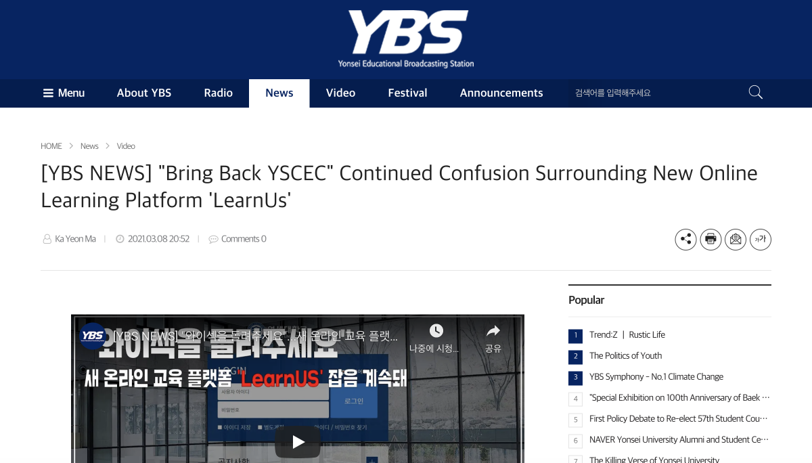
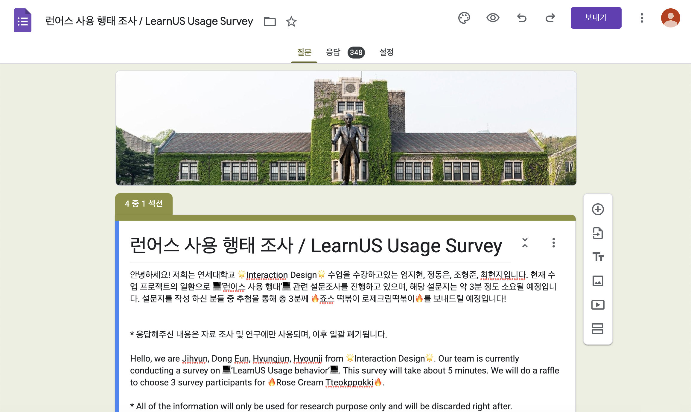
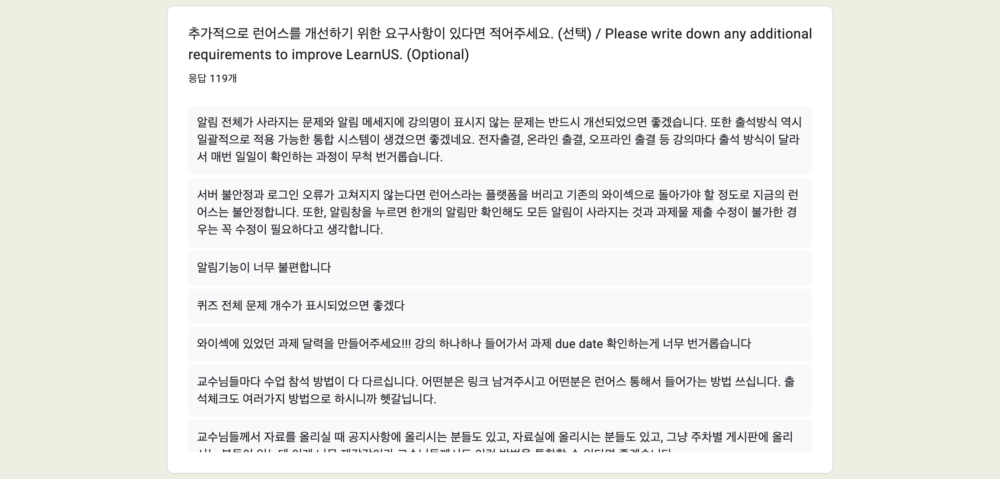
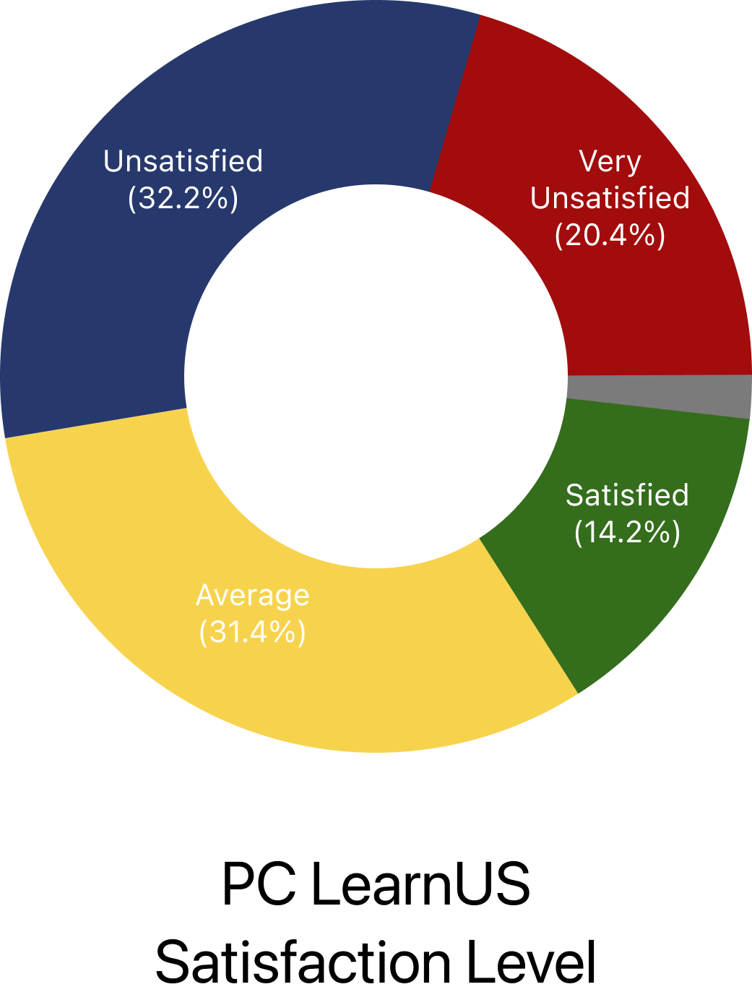
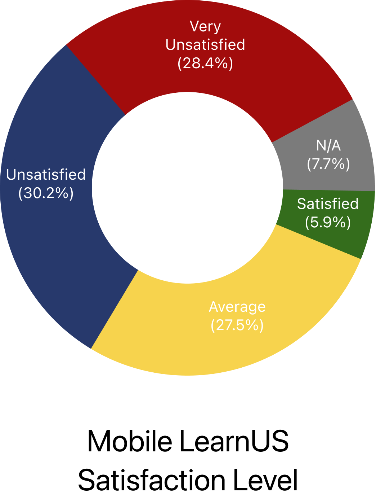

The strike of a global pandemic gave rise to the need for a new learning platform to support various learning forms including online, offline, and blending classes. LearnUs was introduced as the new Learning Management System (LMS) for Yonsei University as a substitute for YSCEC.
Summary
01: BACKGROUND
02: PROBLEM
"There were critical usability issues to the newly introduced LearnUs service, including the fact that it did not support a mobile-friendly environment."
Since the launch of the new LMS, there were complaints that LearnUs does not provide a satisfactory LMS experience. The voice of discontent against the new system was so loud among Yonsei students that the school newspaper covered the issues surrounding LearnUs. The problems ranged from technological problems including server issues to poor design leading to complex navigation and inconvenience. Most importantly, a mobile application for LearnUs did not exist, meaning that students had to access the website through Safari every time with their mobile device.
When our team posted our survey on a school community bulletin board, we received a tremendous amount of 348 responses, with 119 comments requesting improvements.
 03: SERVICE BRIEF
As a solution, our team designed a mobile LearnUs application to remedy the inconvenience of having to access the LearnUs website through Safari every time and to improve overall user experience.
04: SOLUTION OVERVIEW

Dashboard
The dashboard page displays a color-coded course list for easier differentiation. A short-cut to the timetable is provided for convenience.
Calendar & To-Do
The Calendar Page visually shows the academic schedule in one look and enables users to add their own schedule. The To-do List Page automatically adds to-dos with functions of adding and editing.


My Page
In My Page, users can customize colors for courses, view the timetable, and check attendance.
Notifications
The Notification Page has been revised so that the notifications do not disappear upon checking but are left checked.

Empathize
05: SURVEY
A survey was conducted on Yonsei University students who have experienced the LearnUs platform to gain general information about the user experience. Questions were asked to measure usage frequency, satisfaction level on each device, and importance and satisfaction level of each function. There were a total of 345 responses, and the findings from analyzing the results are as below.
i. Users are dissatisfied with the current mobile LearnUs environment.
More than half of respondents found PC LearnUs to be unsatisfactory, and even a higher number found mobile LearnUs to be unsatisfactory. Through this question, we could verify once more that LearnUs was not providing a satisfactory mobile LMS experience and was in need of improvement.


ii. Users tend to be more dissatisfied with more important tasks
It can be found from the IPA(Importance Performance Analysis) Chart below that the functions of higher importance tended to have lower satisfaction levels. Especially, notification, watching lectures, assignment turn-in, and calendar functions had significantly low satisfaction levels even though they scored high in importance. Measuring importance and satisfaction of each function let us set our priorities in establishing design goals for a redesigned interface.